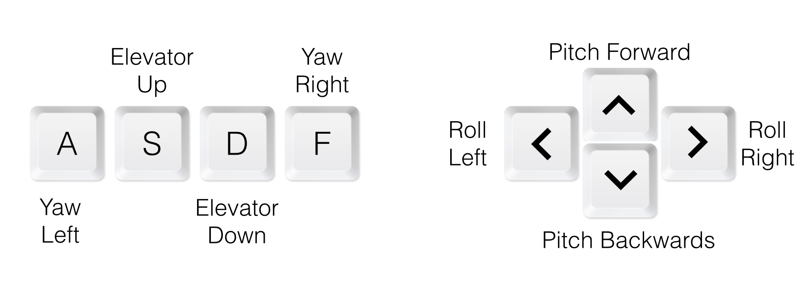
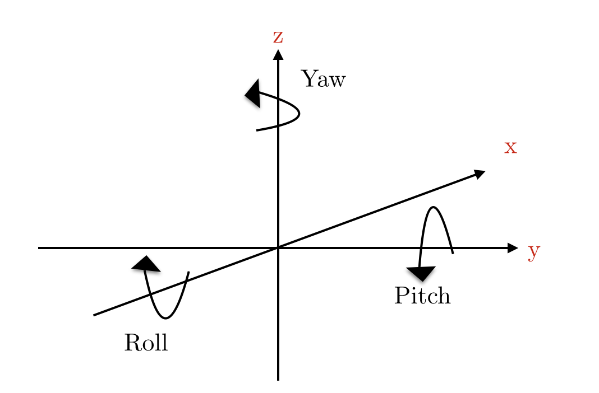

Mimoun P Cadosch Delmar, December 2014
In recent years, the increasing supply of smartphones has driven down the cost of electronic components and sensors such as gyroscopes and accelerometers. As a result, quadcopters can now be more easily controlled with the help of onboard sensors, microcontrollers, and wireless connections to base. Not surprisingly, the popularity of these vehicles has boosted in the past few years.
The goal of this project is to implement a three dimensional simulation of a quadcopter in JavaScript. The library used for visualizing this simulation in three dimensions is Three.js.
My motivation, beyond this simulation, is that the same control systems designed for this simulation can be applied to real-world quadcopters, for programmable (and hence autonomous!) flight control.
First, let's describe the setup of this project as well as the kinematics of the quadcopter. The quadcopter is defined in two different spaces, the inertial space and the body space. The position and velocity in the inertial space are defined as:
\begin{align} x = \begin{bmatrix} x \\ y \\ z \\ \end{bmatrix} && \dot{x} = \begin{bmatrix} \dot{x} \\ \dot{y} \\ \dot{z} \end{bmatrix} \end{align}
Similarly, in the body frame, the position and velocity of the quadcopter are given by:
\begin{align} \theta = \begin{bmatrix} \phi \\ \theta \\ \psi \end{bmatrix} && \dot{\theta} = \begin{bmatrix} \dot{\phi} \\ \dot{\theta} \\ \dot{\psi} \end{bmatrix} \end{align}
To be specific, $\phi$ corresponds to the roll, $\theta$ to the pitch, and $\psi$ to the yaw of the quadcopter. These correspond to the angular position of the quadcopter relative to the $x$, $y$, and $z$ axes, respectively. The state of the system can thus be given by $q = \begin{bmatrix} x \\ \theta \end{bmatrix}$ and $\dot{q} = \begin{bmatrix} \dot{x} \\ \dot{\theta} \end{bmatrix}$.
The rotation matrix $\textbf{R}$ gives us a way to go from the body space to the inertial space. In other words, if we have a vector $\vec{v}$ in the body frame, this vector is $R \vec{v}$ in the inertial space. R is given by:
\begin{align} R = \begin{bmatrix} cos_\phi cos_\psi-cos_\theta sin_\phi sin_\psi & - cos_\psi sin_\phi - cos_\phi cos_\theta sin_\psi & sin_\theta sin_\psi\\ cos_\theta cos_\psi sin_\phi + cos_\phi sin_\psi & cos_\phi cos_\theta cos_\psi - sin_\phi sin_\psi & -cos_\psi sin_\theta\\ sin_\phi sin_\theta & cos_\phi sin_\theta & cos _\theta \end{bmatrix} \end{align}
As a heads-up, here I use the words "motor" and "rotor" interchangeably. Our purpose here is to find an equation describing the magnitude $T$ of the force produced by a rotor. These magnitudes are key in calculating the motion of the quadcopter through time, and will help us understand its movement through space. Quadcopters use brushless motors, numbered 0 through 3 in this simulation. Each rotor creates torque, which is given by:
\begin{equation} \tau = K_qI \end{equation}
where I is the current through the motor, and $K_q$ is the torque constant. Torque is responsible for producing the thrust that will make the quadcopter move. The voltage going through the rotors is given by:
\begin{equation} V = R_\alpha I + K_e\omega \end{equation}
where again, $R_\alpha$ and $K_e\omega$ are rotor-specific constants, and $\omega$ is the angular velocity of each motor. The voltage going through the rotors is very important, since it is the only way we have to control the quadcopter. In real-life settings, this is done via a flight-controller and electronic speed controllers (ESCs). Therefore, in steady state, the power of each rotor is given by:
\begin{equation} P = IV = \frac{\tau}{K_q} R_\alpha I + K_e\omega \\ \end{equation}
By making a series of simplifications not relevant to this simulation (as we are not dealing with a real-world quadcopter!), we can approximate P by:
\begin{equation} P \approx \frac{K_e}{K_t}\tau \omega \end{equation}
Now, conservation of energy gives that the energy consumed by the rotor in $\Delta_t$ is equal to the thrust generated by the rotor times the velocity of the air. This equality translates into the following equation:
\begin{equation} P = T v_h \end{equation}
Here, we assume that the quadcopter is flying at reasonably low speeds, so $v_h$ is the velocity of the air when the quadcopter is in hovering mode. Momentum theory further relates hover velocity to thrust by:
\begin{equation} v_h = \sqrt{\frac{T}{2\rho A}} \end{equation}
We can thus write:
\begin{align} P &= \frac{K_e}{K_t} \tau \omega = \frac{K_v K_\tau}{K_t} T \omega = \frac{T^{3/2}}{2 \rho A} \end{align}
And, finally, we obtain an equation for the thrust of a rotor:
\begin{align} T &= \Big(\frac{K_v K_\tau \sqrt{2 \rho A}}{K_t} \omega\Big)^2\\ T &= k \omega^2 \end{align}
where k is a constant used to simplify the system, combining all the other system constants. The important information here is that the magnitude $T$ of the rotor thrust is quadratic in the angular velocity $\omega$ of the rotor.
The total thrust force on the quadcopter, applied at its center of gravity (the center of the frame, intersection of the quadcopter's arms) is:
\begin{equation} T_B = \sum_{i=1}^{4} T_i = \begin{bmatrix} 0 \\ 0 \\ \sum \omega_i^2 \end{bmatrix} \end{equation}
For each motor, we can write the torque it produces about its axis of rotation. For $i = {\phi, \theta, \psi}$, we can write:
\begin{equation} \tau_{axis} = b \omega^2 + I_M \dot{\omega} \end{equation}
where $I_m$ is the moment of inertia about the rotor's axis, $\dot{\omega}$ is the angular acceleration of the propeller, and $b$ is the drag coefficient of the air. The values of vector $\tau_{B}$ correspond to the torques around the $\phi$, $\theta$ and $\psi$ axes.
\begin{align} \tau_B = \begin{bmatrix} \tau_{\phi} \\ \tau_{\theta} \\ \tau_{\psi} \end{bmatrix} = \begin{bmatrix} lk(- \omega_2^2 + \omega_4^2) \\ lk(-\omega_1^2 + \omega_3^2) \\ \sum_{i=1}^{4} \tau_{M_i} \end{bmatrix} \end{align}
Here, we have made the following design choices: rotors 1 and 3 are in the roll axis (x), rotors 2 and 4 in the pitch axis (y). l corresponds to the length of the arms of the quadcopter (distance between the center and any one propeller). b is the drag coefficient.
Finally, this is where all the derivations we have done so far get in handy. Indeed, we will use the thrust magnitudes and torque values to calculate the motion of the quadcopter through time. Before we start, Let's define the global drag forces as $F_D$, which is a force proportional to the velocity of the quadcopter. The expression for $F_D$ is given by:
\begin{equation} F_D = -k_d \begin{bmatrix} \dot{x} \\ \dot{y} \\ \dot{z} \end{bmatrix} \end{equation}
where $k_d$ is the friction constant, and $\dot{x}$ is the velocity vector in the inertial frame, as previously defined. With this, we can write our equation for the motion of the quadcopter, as given below:
\begin{align} m\ddot{x} &= \begin{bmatrix} 0 \\ 0 \\ -mg \end{bmatrix} + RT_B + F_D \\ \iff \ddot{x} &= \begin{bmatrix} 0\\0\\-g \end{bmatrix} + \frac{RT_B + F_D}{m} \end{align}
Having the equations of motion in the inertial space is nice, but it will be even more useful to have the equations of motion in the body space of the quadcopter. For this purpose, we need Euler's equations for rigid body dynamics. Euler's equations give us:
\begin{align} I \dot{\omega} + \omega \times (I \omega) = \tau \end{align}
where $I$ is the inertia matrix, $\omega$ the angular velocity vector of the quadcopter, and $\tau$ the total torque $\tau_b$ previously calculated. Since the quadcopter has a symmetric structure, with the arms aligned in an X-shape, the inertia matrix $\textbf{I}$ is diagonal and given by:
\begin{equation} I = \begin{bmatrix} I_{xx}&0&0\\ 0&I_{yy}&0&\\ 0&0&I_{zz} \end{bmatrix} \end{equation}
From this, we derive the following expression for the angular acceleration of the quadcopter:
\begin{align} \dot{\omega} &= \begin{bmatrix} \dot{\omega_x} &\dot{\omega_y} &\dot{\omega_z} \end{bmatrix} = I^{-1}(\tau - \omega \times (I \omega)) \end{align}
We're done! In order to update our system at every timestep, we update the relevant values:
Setting up the simulation in THREE.js wasn't simple. Given the complexity of the scene, I opted for an object-oriented design of the different components, in order to keep my code organized.
There are two main folders in the simulation, simulation and visualization. Simulation contains all the files that perform the calculations of the position of the quadcopter in the inertial frame (vector $x$), and its position in the body frame (vector $\theta$). The visualization folder contains all the files necessary to render the scene and objects using the Three.js library.
How do these two folders interact? Every time that the Three.js calls the render() function, the file index.js calls the simulate() function in new_sim.js. This function will return the updated positions $x$ and $\theta$, which index.js uses to draw the updated quadcopter.
There are hundreds of lines of code, and many consist of standard Three.js code that can be found in other examples online. In the interest of conciseness, I will only explain in detail the parts of the code that need most explanation and that are key to the simulation.
Below is the render() function.
// Render function
var render = function () {
// Returns updated positions from the simulation
state = newSimulate(x, xdot, theta, thetadot, omegas, autopilot);
// Updates quadcopter position in the 3D rendering
quad.quad.position.x = state.x[0][0];
quad.quad.position.y = state.x[1][0];
quad.quad.position.z = state.x[2][0];
quad.pitch(state.theta[0][0]);
quad.roll(state.theta[1][0]);
quad.yaw(state.theta[2][0]);
// Updates the positions of the vertices of the quadcopter
quad.updateVertices();
vertices = quad.getVertices(); // Get quadcopter vertices
n = quad.getNormal(); // Get normal to quadcopter plane
n_s = n.clone();
n_s1 = n.clone();
n_s2 = n.clone();
n_s3 = n.clone();
n_s4 = n.clone();
// console.log(state.thrusts);
n_s.multiplyScalar((state.thrusts[0] - 1.2288000000000000) * 10e5 * dir);
n_s1.multiplyScalar((state.thrusts[1] - 1.2288000000000000) * 10e5 * dir);
n_s2.multiplyScalar((state.thrusts[2] - 1.2288000000000000) * 10e5 * dir);
n_s3.multiplyScalar((state.thrusts[3] - 1.2288000000000000) * 10e5 * dir);
var src = vertices[5].clone(); // √ D
var dst = vertices[5].clone().add(n_s);
var src1 = vertices[4].clone(); // √ A
var dst1 = vertices[4].clone().add(n_s1);
var src2 = vertices[6].clone(); // √ B
var dst2 = vertices[6].clone().add(n_s2);
var src3 = vertices[2].clone(); // √ C
var dst3 = vertices[2].clone().add(n_s3);
lines[0].updateLine(src, dst); // √ D
lines[1].updateLine(src1, dst1); // √ A
lines[2].updateLine(src2, dst2); // √ B
lines[3].updateLine(src3, dst3); // √ C
// Update system values
x = state.x;
theta = state.theta;
requestAnimationFrame( render );
view_controls.update();
renderer.render(scene, camera);
};
The most interesting, and challenging part here was drawing the thrust vectors on each rotor. This was useful for me in debugging, because it allowed me to see the thrust of each rotor, and if the movement calculated by the simulation corresponded to the forces I was applying with the keyboard (more about this later).
The function quad.getNormal() returns a vector $\vec{n}$ that is normal to the quadcopter plane. The quadcopter plane is the plane formed by its two arms. Then, we clone this vector into $n_s$, $n_s1$, ..., $n_s4$, which correspond to the thrust vectors on each rotor. These vectors are parallel to $\vec{n}$ because thrusts goes along the rotor axes, which are also orthogonal to the quadcopter plane.
Then, we scale these vectors $n_s$, $n_s1$, ..., $n_s4$ proportional to the thrust at each rotor, also obtained from the simulation. Note that we have to adjust the thrust magnitudes so that changes in magnitude are visible on the screen.
Finally, we place each vector on top of its corresponding rotor. We label the rotors $A, B, C, D$ for tracking purposes. This will make more sense when we talk about the simulation controller.
Finally, we update the state of the system with the values given by the simulation, and render the frame.
How do I calculate the normal to the quadcopter plane? Very simple: I take three points $p0$, $p1$, and $p2$ in the quadcopter, calculate two vectors passing through those three points $\vec{p0p1}$ and $\vec{p1p2}$. Then we know that the cross product of those two vectors is orthogonal to the plane formed by them. Using the cross product we obtained the normal to the quadcopter plane.
Code for this computation is found in quadcopter.js
function Quadcopter(armLength) {
...
this.getNormal = function () {
// Calculate two vectors in the quadcopter plane
var p0p1 = p1.clone().sub(p0.clone());
var p1p2 = p2.clone().sub(p1.clone());
// Vector normal to quadcopter plane
p0p1.cross(p1p2);
return p0p1.clone();
}
}
The code pertaining to the simulation, found in new_sim.js, follows directly for the phyics we calculated previously in this report. The most important functions are acceleration(...) and angular_acceleration(...), as the compute the accelerations $a$ and $\dot{\omega}$ we need to calculate the velocities of the system $\dot{x}$ and $\omega$, which we in turn use to compute the updated positions $x$ and $\theta$. The functions omega2thetadot and thetadot2omega follow naturally from the rotation matrix $\textbf{R}$ given above.
At the beginning of the simulation, a small explanatory introduction is made about how to control the system. The important point here is that with the keyboard, we increase or decrease the current (and thus angular velocity) of different sets of rotors, according to our desired move: roll, pitch or yaw.
 
This simulation required a good number of linear algebra operations, especially on matrices. The best linear algebra library in JavaScript I could find was Numeric.JS. Unfortunately, this library seems very outdated, doesn't have the best documentation, and lacks many functions I needed to keep my code short and simple. So I recurred to writing my own linear algebra functions to complement Numeric.JS. These functions are found in simulation/linear_algebra.js. The functions I wrote are in the spirit of those available in Eigen and Matlab, such as zero(n), or the ability to operate on the columns of a matrix.